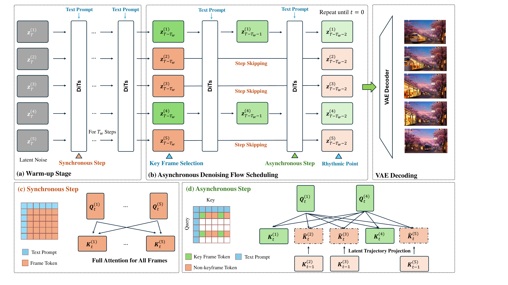

Training-free video diffusion acceleration
RhymeFlow
Training-Free Acceleration for Video Generation with Asynchronous Denoising Flow Scheduling
RhymeFlow decouples the denoising trajectories of video frames. Keyframes keep full denoising fidelity, while predictable non-keyframes skip selected steps and are recovered through latent trajectory projection.
1Tsinghua University
2GigaAI
Abstract
Video generation models based on Diffusion Transformers achieve strong synthesis quality, but their 3D attention and long denoising chains create substantial inference latency. Existing training-free methods mostly reduce the cost inside each denoising step, while every frame still follows the same dense timestep schedule.
RhymeFlow introduces an orthogonal acceleration dimension: asynchronous denoising flow scheduling. It detects pivotal keyframes that anchor semantic transitions, applies dense step-by-step denoising to those frames, lets non-keyframes progressively skip predictable denoising steps, and uses lightweight latent trajectory projection to maintain complete temporal context for 3D attention.
Wan 2.1
1.53x
speedup reported with high Dense-reference fidelity.
HunyuanVideo
2.60x
best latency and speedup when combined with SAP.
Composable
+SAP
orthogonal to sparse attention and cache-style accelerators.
Visual comparison
Dense vs. SAP vs. RhymeFlow
Each slide compares the Dense reference, SAP, and RhymeFlow on the same prompt. Use the arrow buttons or progress dots to browse representative samples.
Pipeline breakdown
Asynchronous Denoising Flow Scheduling
The pipeline video walks through warm-up, keyframe selection, rhythmic synchronization, asynchronous updates, and latent projection for skipped non-keyframes.
1. Warm-up
All frames are updated synchronously at the beginning, giving the model a stable shared latent trajectory.
2. Keyframe anchors
Semantic changes identify pivotal frames that should preserve full denoising fidelity.
3. Progressive skipping
Non-keyframes receive fewer updates as denoising becomes more predictable.
4. Latent projection
Projected skipped states keep attention context complete without running the full network for every frame.
Method and analysis
Inside RhymeFlow
Qualitative comparisons from the paper. RhymeFlow preserves textures, lighting consistency, and motion structure while assigning heterogeneous denoising schedules to different frames.
Benchmark results
Comparison with Baselines
We report paper baseline comparisons rather than hyperparameter tuning tables. RhymeFlow improves the speed-quality trade-off on Wan 2.1 and can be combined with SAP for higher throughput.
Wan 2.1
| Method | PSNR ↑ | SSIM ↑ | LPIPS ↓ | SubCon. ↑ | ImgQual. ↑ | Latency (s) ↓ | Speedup ↑ |
|---|---|---|---|---|---|---|---|
| Dense | - | - | - | 0.9102 | 0.6946 | 993.5 | - |
| SpargeAttn | 20.399 | 0.613 | 0.393 | 0.8632 | 0.7118 | 719.7 | 1.38x |
| SVG | 22.419 | 0.694 | 0.290 | 0.8758 | 0.6913 | 708.0 | 1.40x |
| SAP | 24.454 | 0.730 | 0.223 | 0.8789 | 0.6837 | 608.5 | 1.63x |
| Ours | 26.291 | 0.783 | 0.168 | 0.8831 | 0.6706 | 650.4 | 1.53x |
| Ours + SAP | 24.586 | 0.737 | 0.221 | 0.8792 | 0.6806 | 596.8 | 1.66x |
HunyuanVideo
| Method | PSNR ↑ | SSIM ↑ | LPIPS ↓ | Latency (s) ↓ | Speedup ↑ |
|---|---|---|---|---|---|
| SVG | 21.17 | 0.684 | 0.392 | 3459 | 1.92x |
| SAP | 24.64 | 0.904 | 0.068 | 2634 | 2.52x |
| EasyCache | 23.51 | 0.861 | 0.119 | 2850 | 2.33x |
| DiCache | 23.54 | 0.860 | 0.114 | 2814 | 2.36x |
| VGDFR | 19.49 | 0.779 | 0.199 | 3019 | 2.20x |
| Ours | 26.34 | 0.918 | 0.060 | 2939 | 2.26x |
| Ours + SAP | 25.01 | 0.910 | 0.068 | 2555 | 2.60x |
Citation
BibTeX
@article{dai2026rhymeflow,
title={RhymeFlow: Training-Free Acceleration for Video Generation with Asynchronous Denoising Flow Scheduling},
author={Dai, Chensheng and Zhang, Shengjun and Li, Yifan and Zhang, Zhang and Zhu, Zheng and Duan, Yueqi},
journal={arXiv preprint arXiv:2606.06309},
year={2026}
}